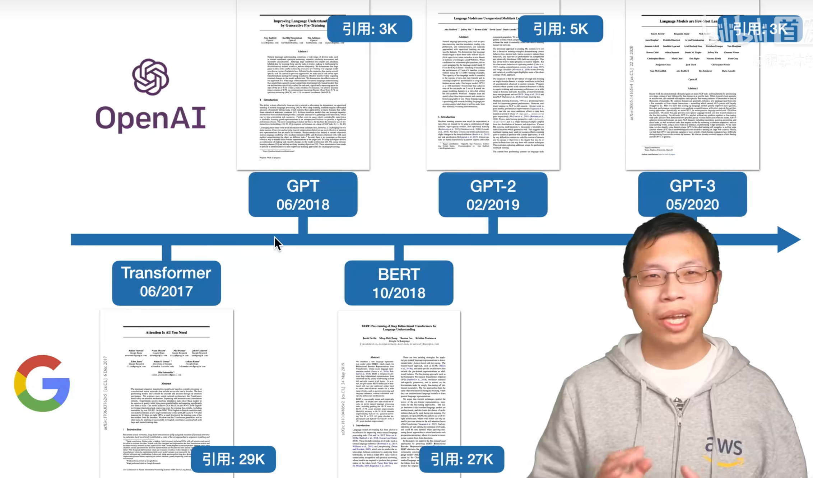
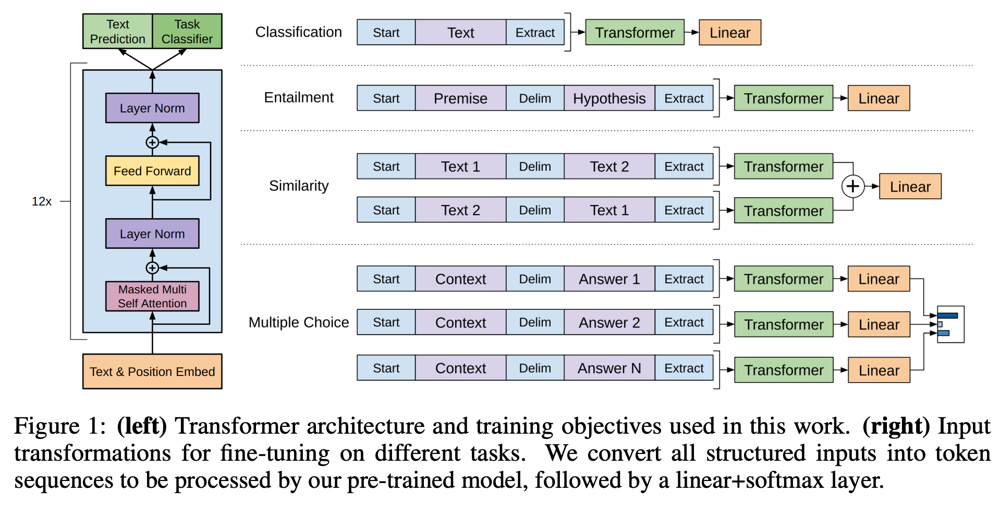
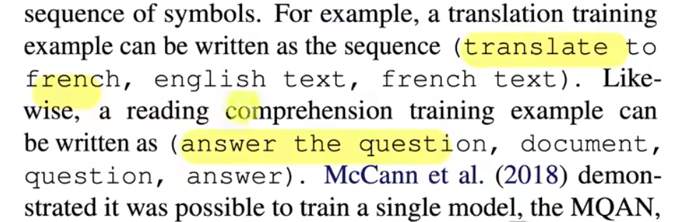
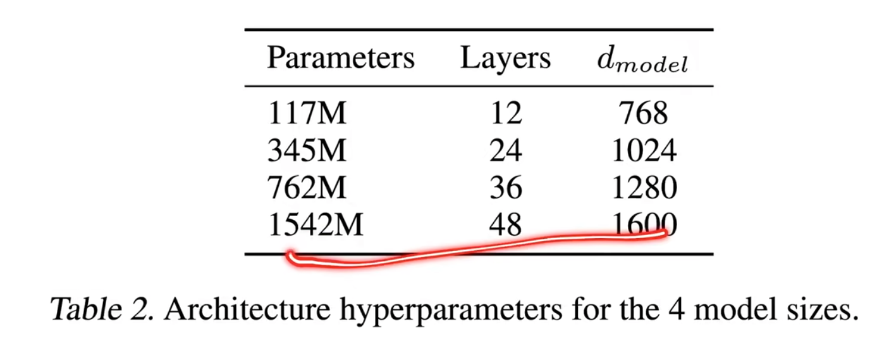
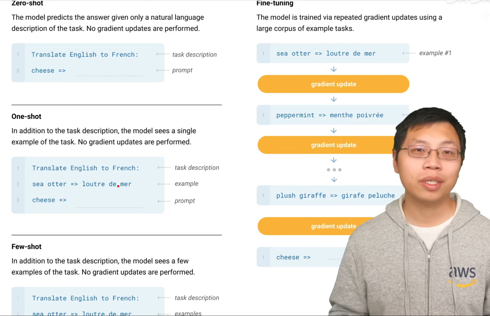

GPT系列论文

GPT的核心技术是把Transformer的解码器拿出来，然后在没有标签的大量的文本数据上训练一个语言模型，来获得一个预训练模型，然后再用它在子任务上做微调，得到每一个任务所要的分类器，这跟计算机视觉用的技术一样。4个月之后，BERT出来了，BERT的思想跟GPT不一样，我是把Transformer编码器拿过来，然后收集了一个更大的数据集用来做预训练，最后效果比GPT好很多。BERT里面一共有两个模型：一个叫BERT-base，一个叫BERT-large。BERT-base跟GPT的模型大小是一样的，BERT-large当然是比BERT-base要大一些。结果上来说，BERT-base应该是要比GPT要好，而BERT-large又远好于BERT-base。另外四个月之后，GPT-2出现了，原作者吸取了前面的教训，他们收集了一个更大的数据集，训练了一个更大的模型，GPT-2比BERT-large要大。如果就简简单单地训练了一个大的模型，那在新意度度上肯定是有问题的，所以它就沿着自己的技术路线，继续使用Transformer的解码器来深入挖掘语言模型的潜力，然后发现这个非常适合做zero shot，但是因为走的比较远，所以导致效果上没有那么的惊艳。于是2020年的5月份，他们推出了GPT 3， GPT 3对GPT2的改进就是数据和模型都大了100倍，暴力出了奇迹，然后终于把效果做到非常惊艳。在同样模型大小，比如一个亿级别模型大小时，BERT的性能是要好于GPT的，也就是未来的工作更多愿意用BERT这类的文章，因为有可能能找到足够的机器，能把模型跑起来，而且效果不错。不然如果要跟GPT系列的文章的话，没有那么多资源跑不起实验。
GPT-1：使用生成式预训练来提升语言的理解能力
1. 摘要
前面两句话讲的是我要解决什么问题。在自然语言理解里面有很多不一样的任务。虽然我们有很多大量的没有标签的文本文件，标好的数据是相对来说比较少的，这使得我们要去在这些标好的数据上训练出分辨模型会比较难，因为数据相对来说还是太小了。接下来就讲作者怎么解决这个问题。我们先在没有标签的数据上面训练一个预训练模型，这个预训模型是一个语言模型。接下来再在有标签的这些子任务上面训练一个分辨的微调模型，这个在计算机视觉里面早在八九年前已经是成为主流的算法，但是在NLP里面一直没有流行起来，是因为在NLP里面没有像ImageNet那么大规模标好的数据。在计算机视觉里面我们有标好的100万张图片的ImageNet，在NLP的话并没有那么大数据集。虽然说机器翻译那一块也许能做到100万的量级，但是一个句子和一个图片不在一个尺度上面，一张图片里面含有的信息，那个像素的信息比一个句子里面能去抽取的信息来得多很多。所以一张图片可能能换10个句子的样子，那意味着是说至少要有1000万级别的句子级别的标准数据集，才能够训练比较大的模型，这导致在相当一段时间里面，深度学习在NLP里进展没有那么的顺利，直到GPT和后面的BERT的出现才打开了局面。使用没有标签的数据先训练好预训练模型再来做微调，因为无监督相较于CV领域就往前走了一大步，然后在GPT系列后面的文章在做zero shot上走了另外一大步。
如果说深度学习前面5年主要是CV在引领整个潮流的话，那么最近几年可以看到这些创新很多来自于NLP，而且这些创新也在反馈回CV里面。比如说之前我们读过的MAE这篇文章，就是把BERT用回到计算机视觉上面，CLIP也是打通了文本和图像。当然在NLP用没有标签的文本训练不是第一次，比如说十几年前就很火的word to vector这个词嵌入模型，就是用的大量的没有标签的文本。但GPT跟之前工作的区别是在微调的时候构造跟任务相关的输入，从而使得只要很少地改变我们模型的架构就行了。这是因为文本跟图片不一样，它的任务更加多样性一些，有些任务对词进行判断，有些任务对句子进行判断，有些任务需要一对句子或者三个句子，还有些应用要生成一个句子，所以导致每个任务都需要有自己的模型。最早的词嵌入只是做一个词上面的一个学习，然后后面的模型还得去构造。之前的工作需要把模型进行一些改变，来适应各个任务，但是GPT只要改变输入的形式就行了，而不需要改变模型。最后实验结果在12个任务里面有9个任务能够超过当前最好的成绩，稍微弱于BERT的结果，所以BERT出来之后比GPT更加有影响力，因为它效果更加好一点。但是从创新度来讲，GPT应该在BERT之上，因为它毕竟是前面的工作，BERT在很多时候跟它的思路是一样的。
2. 引言
怎么样更好地利用无监督的文本？当时最成功的模型还是词嵌入模型。
用没有标签文本的时候，使用它遇到的一些困难。主要有两个困难：第一个困难是不知道用什么样的优化目标函数，就是给一堆文本，损失函数长什么样子呢？当时候有很多选择，比如说用语言模型、机器翻译、文本的一致性，但是问题是没有某一个特别好，一个目标函数在一些任务上比较好，另外一个目标函数在另外一些问题上也比较好，要看目标函数跟实际要做的子任务的相关度有多高。 第二个难点是怎么样有效的把学到的这些文本的表示，传递到下游的子任务上面，这也是因为NLP里面的子任务差别还比较大的，没有一个简单的统一的有效的方式，使得一种表示能够一致地迁移到所有的子任务上面。
GPT提出了一个半监督的方法，在没有标签的文本上训练一个比较大的语言模型，然后再在子任务上进行微调。当年作者用的是半监督学习这个词，semi supervised在机器学习界可能在10年前是非常的火的。它的核心思想是有一些有标签的数据，但还有大量的相似的但没有标签的数据，怎么把这些没有标签的数据用过来就是半监督学习想学的东西。在没有标签的模型上面训练好一个模型之后，然后再在有监督的上面做微调可以是一种半监督学习算法，但是半监督学习里面还有很多别的算法，现在我们把GPT这一套方法和BERT之后所谓的工作也用到了类似的方法，不叫做半监督学习，而叫自监督学习，叫做self supervised learning。
接下来是这篇工作的模型，主要是有两点，第一点是说模型是基于Transformer这个架构的。作者发现跟RNN相比，Transformer在迁移学习的时候，学到的那些feature更加的稳健。原因可能是因为Transformer里面有更结构化的记忆，使得能够处理更长的这些文本信息，从而能够抽取出更好的句子层面和段落层面的语义信息。第二个技术要点是在做迁移的时候，用的是一个任务相关的输入的一个表示。
3. 模型
3.1 怎么在没有标签的数据上做预训练
输入文本是有序的，并且顺序地表示。GPT使用一个标准的语言模型的目标函数来最大化下面的一个似然函数。具体来说，语言模型就是要预测第i个词出现的概率，那么第i个词即为，它怎么预测呢？拿的前k个词（上下文窗口大小）预测这k个词后面那一个词是谁。第一个Loss1是文本出现的联合概率。就是要训练一个模型，使得它能够最大概率地输出跟我的文本长得一样的一些文章。模型是参数，k是超参数。从神经网络角度而言，k就是输入序列的长度，序列越长的话，网络看到东西就越多，它越会倾向于在一个比较长的文本里面去找里面的关系。k越短，当模型相对来说比较简单只要看比较短的就行了。如果你想让你的模型很强的话，那么k可能要取到几十几百甚至上千。用到的模型是Transformer的解码器。
Transformer有两个东西，一个是编码器，一个是解码器，它们最大的不一样在于编码器拿一个序列进来，它对第i个元素抽特征的时候能够看到整个序列里面所有的元素，但是对解码器来讲，因为有掩码的存在，所以它在对第i个元素抽特征的时候，只会看到当前元素和它之前的这些元素，它后面那些元素的东西通过一个掩码使得在计算注意力机制的时候变成零，所以它是不看后面的东西的。
因为用的是标准的语言模型，只对前预测，预测第i个词的时候，不会看到这个词后面的这些词是谁，所以一定是往前的，所以只能使用Transformer的解码器，而不能使用它的编码器。
如果要预测u这个词它的概率的话，要把这个词前面这些词全部拉出来，记成一个U，然后把它做一个投影（词嵌入的投影），再加上一个位置信息的编码得到第一层的输入。接下来做N层Transformer块，每一层把上一次的输出拿进来，然后得到输出，因为Transformer模块不会改变输入输出的形状，所以一直做完之后，拿到最后一个transform块的输出，然后再做一个投影，用softmax就会得到它的概率分布了。
GPT跟BERT的区别，BERT用的不是标准的语言模型，它用的是一个带掩码的语言模型，是完形填空。完形填空是给一个句子，把中间的一个词挖掉，预测中间的。即在预测的时候，既能看见它之前的词，又能看见之后的词，所以它可以对应的使用Transformer的编码器，因为编码器能看到所有。使用编码器和解码器，倒不是主要的区别，主要区别在于目标函数的选取。GPT用的是一个更难的，给前面一段话预测后面一个词，预测未来当然比完形填空要难。知道过去和未来，那么中间差值就能比较容易得到。预测一个开放式的结局比预测中间一个状态要难很多。这也是导致了GPT在训练上和效果上其实比BERT要差一些的一个原因之一。反过来，如果你的模型真的能预测未来的话，那么你比BERT这种通过完形填空学的模型要强大很多，这也是为什么作者需要一直不断的把模型做大，而且一直不断努力才能最后做出GPT3那样的效果惊艳的模型出来。作者选了一个更难的技术路线，但很有可能它的天花板也就更高了。
所以这就是预训练模型，这也是为什么我们说GPT就是Transformer的一个解码。
3.2 怎么样做微调
在微调任务里面，是有标签的。具体来说，每次给一个长为M的一个词的序列x，然后告诉这个序列它对应的标签是y，每次给这个序列去预测它的y。把整个这个序列放进之前训练好的GPT的模型里面，然后拿到Transformer块的最后一层的输出，它对应的HM这个词的这个输出，然后再乘以一个输出层，然后再做一个softmax就得到它的概率了。微调任务里面所有的带标签的这些序列对输入进去之后，计算真实的标签上面的概率，对它做最大化。这是一个非常标准的分类目标函数。虽然在微调的时候只关心这一个分类的进度，但如果把之前预训练的语言模型同样放进来，效果也不错。即在做微调的时候有两个目标函数，第一个是给你这些序列然后预测序列的下一个词和给你完整的序列让你预测序列对应的标签，这两个一起训练效果是最佳的，然后通过一个λ把这两个目标函数加起来。λ是一个超参可调。
3.3 怎么样对每个子任务表示输入
怎么样把NLP里面那些很不一样的子任务表示成一个我们要的形式，即表示成一个序列和它一个对应的标签。

虽然不同的应用输入数据都不那么一样，但是基本上都可以构造成一个序列，但不论输入形式怎么变，输出的构造怎么变，中间预训练好的Transformer模型是不会变的。预训练完成之后，做下游任务时不会对模型结构做改变，这也是GPT和之前工作的一个大的区别，也是这篇文章的核心卖点。
GPT-1模型用的是12层的解码器，每层维度是768。 BERT-base也是12层维度是768，就是为了和GPT-1作对比。编码器在同样的层数和维度大小下会比解码器简单一点（少一块不带掩码的模块），BERT-large就比BERT-base大大概3倍，能做这么大是因为数据集更大（还加了3倍大的20亿词的wikipedia数据集）。
当你的工作被别人用更大的模型和数据打败的时候如何回应？
GPT-2：语言模型是无监督的多任务学习器
1. 摘要
做了一个更大的有百万级别文本的数据集WebText，训练一个更大的模型（15亿参数的Transformer，BERT-large最大只是3.4亿），但此时模型效果的优势并不大，就找了另一个观点zero-shot作为卖点。
2. 引言
在一个主流的途径就是对一个任务收集一个数据集，然后在上面训练模型做预测，为什么这个东西很流行，是因为现在的模型它的泛化性是不是很好的，就是说你在一个数据集，一个应用上训练的模型很难直接用到下一个模型上面。然后他又提到叫做多任务学习，多任务学习一开始的观点是说，我在训练一个模型的时候，同时看多个数据集，而且可能会通过多一个损失函数来达到一个模型，能够在多个任务上都能用。这个是在90年代末提出来的，在2000年到2010年之间啊，也曾经是比较流行的一个话题啊。作者说虽然这个东西看上去比较好，但是在LP里面其实用的不多，在LP里面现在主流的算法也就是之前GPT1和BERT那一类的，就是说在一个比较大的数据上做一个预行的模型，然后再对每一个任务上做一个有监督的一个微调。当然，这样子还是有两个问题啊，第一个是说对每一个下游的任务，你还是得去重新训练你的模型。 第二个就是说，你也得收集有标号的数据才行，这导致你在拓展到一个新的任务上是还是有一定的成本的。然后导论的最后一段话就是说GPT2要干什么事情，他说我还是在做我的语言模型，但是呢，我在做到下游任务的时候，我会用一个叫做zero shot的设定，Zero shot是说我在做到下游的任务的时候不需要下游。任务的任何标注的信息，那么当然也不要去训练我的模型，这样子的好就说我只要训练一个模型，在任何地方都能用最后一句话是说，我们得到了还can挺不错的，而且有一定竞争力的结果。回到我们前面讨论的，如果作者就是在GPT的基础上用一个更大的数据集训练一个更大的模型，说我比BERT好一些，可能也就好那么一点点，不是好那么多的情况下。那么这篇文章有没有意思？大家会觉得没什么意思，工程味特别重。那么现在来了，我换一个角度，我选择一个更难的问题，我说做zero shot就不训练，不要下游任务的任何标号，然后给你得到也还不错，差不多的，有时候好一点，有时候差一点的结果。虽然这个时候从结果上看没那么厉害，但亲一度一下就来了，对吧？所以这也给大家做研究，有一些提示。你不要一条路走到黑，做工程你可以一条路走到黑，你就把精度往死里做，但是在做研究的时候，你一定要比较灵活一点，尝试从一个新的角度来看问题。
3. 方法
GPT-2和GPT-1在模型上基本上是长得一样的，聚焦于跟之前方法的一些不同的地方。预训练GPT-1是在自然的文本上训练的，但是在做下游的任务的时候，对它的输入进行了构造，特别的是加入了开始符、结束符和中间的分隔符，这些符号在之前模型是没有看过的，但是因为有微调的环节，所以模型会去认识这些符号。给定一些训练样本，可以去认识这个符号代表什么意思。但现在要做zero shot，那么在做下游的任务的时候，模型不能被调整了，但是如果还引入一些模型之前没见过的符号的话，模型就会感到很困惑。所以在这个设定下，GPT-2在构造下游任务的数的时候，就不能引入那些模型没有见过的符号，而是要使得整个下游任务的输入跟之前在预训练模型看到文本长得一样，即输入的形式应该更像一个自然的语言。这个地方作者给了两个例子，第一个例子是说做机器翻译，如果你想把英语翻译成法语，你可以表达成这样一个句子：首先是翻译成法语，然后是英语的那个文本，接下来是英语对应的法语的文本。所以前面这三个词可以认为是做了一个特殊的分隔符的意思。在后面的文献里面，这个叫做prompt，也叫做提示。

如果要做阅读理解的话，可以设计一个提示，叫做“回答这个问题”，接下来是读的那个文本，然后是你的问题，最后是你的答案。“回答这个问题”作为一个提示，让模型知道现在要去做这个任务。接下来还有大段的讨论为什么可以这么做，因为这个东西不是作者提出来，是前面的工作提出来的东西，后面这些话基本上作者都在讨论，是说这个途径到底为什么可以工作。有了更大的数据集之后就可以做更大的模型，作者一共设计了四个模型。

GPT-2里发现随着模型的增大，性能还是在上升，所以还可以进一步加大去突破性能，使得跟真正在有监督上训练出来的效果一样，然后就是GPT-3的工作。
GPT-3：语言模型是Few-Shot学习器
GPT-1最后在子任务上提供一些样本，但不是在子任务上所有样本的时候，其实语言模型能够用最少数的样本来极大地提升性能。GPT-2在GPT-1的基础上走了一大步，不提供任何相关的训练样本直接使用预训练模型去对子任务做预测（和BERT新意度上的区分）。GPT-1和BERT做的是同样的问题所以问题大小固定，GPT-2在新意度上拉得比较高但有效性比较低，所以论文价值难定，所以GPT-3是来解决GPT-2的有效性问题的。不再追求极致zero-shot，样本在可控范围内成本还是比较低的。GPT-3是完全基于GPT-2模型的。
1. 摘要
训练了一个自回归模型GPT-3，有1750亿个可学习的参数，比之前所有非稀疏的模型（稀疏模型是指整个权重可以是稀疏的，里面有大量0，但如果模型有很多0也算进去的话模型也能算得比较大），也就是不会有很多0的模型在可学习的参数上相比要大10倍。因为模型已经这么大了，如果做子任务的时候还要去训练模型，成本上是很高的。所以GPT-3在作用到子任务上时，不做任何梯度更新或微调。就算是在few shot情况下，GPT-3也不是用微调（因为微调需要去算梯度，那么大模型算梯度是非常难的事情）。在所有的NLP任务上取得了很好的成绩，远比GPT-2要好，GPT-3能生成一些新闻的文章而且让人类难以区分。
2. 引言
近年来NLP里大家都用预训练好的语言模型再做微调。问题在于对每个子任务还是需要一个跟任务相关的数据集去做微调，第一大问题是你需要对一个大数据集去做标注，第二个是当一个样本没有出现在数据分布里时泛化性不见得比小模型要好，所以即便在微调上效果很好也不能说明预训练模型泛化性就特别好，很有可能就是过拟合了预训练的训练数据，而且这个训练数据和微调所要的那些任务刚好有一定的重合性才导致在微调任务上做得好。如果不允许微调不允许改变预训练模型参数，那么拼的就是预训练模型的泛化性，如果允许微调那么预训练模型好一点坏一点差别都不那么大了。第三个是人类不需要一个很大的数据集来做一个任务。
在CV里对于Few Shot，给定一些样本，还是可以用这些样本来对模型进行更新，这样能更拟合到这个上面去。但GPT-3强调了不对权重做任何更新（模型太大了）。
meta-learning是说真的训练一个很大的模型它学习了大量任务，它的泛化性还不错。in-contex learning是说在后面即使给一些训练样本也不更新模型权重。
3. 模型
微调需要的数据量要少于从0开始训练，并且学习率比较小 ，是因为微调的初始值是用预训练好的模型做的，它和最终的解已经很近了。

模型层数增加的时候宽度也应该增加，因为计算复杂度和宽度呈平方关系，跟层数是线性关系。整体来说GPT-3模型偏扁一点。GPT-3：sparse transformer+GPT-2
为什么要用比较大的batch size：batch size一大计算性能会好，每台机器的并行度会更高，通讯量会变低，对分布式比较好。在小的模型上不用很大的batch size是因为对小的模型更容易过拟合，需要用一个比较小的batch size，这样采样的时候数据里的噪音是比较多的。当模型变得很大的时候。用大的batch size会降低批量里的噪音，对大的模型来说问题不大。这有点反直觉，当模型变得越来越大的时候过拟合没有那么严重，可能有两个原因：1.神经网络这么设计下来大家训练出来能得到比较好的结果是因为背后有一定的结构使得它不那么容易像简单的mlp一样直接的过拟合。2. 当模型越来越大的时候而且在有结构的情况下它能收的范围更广更有可能概括到一个可能存在的比较简单的模型架构，如果模型比较小的话，可能搜索空间都搜不到那个简单的模型那边去。模型很大的时候SGD能帮助找到那个模型使得泛化精度比较好。
当batch size变大的时候学习率会变小【反直觉】。
模型训练
GPT-3有接近2000亿个可学习参数，整个模型是非常难训练的，需要分布式训练，需要做非常好的模型分割和数据分割，文中说它是在V100的有的带宽很高的集群上训练的(DGX-1的集群，里面的带宽是非常高的)。
评估的时候用的是上下文的学习。
机器学习一大痛点：当你想持续线性地提升精度的时候，得不断地指数去翻数据量，数据量时间很难的事情。
局限性
在文本生成上还比较弱，如果让GPT-3写一个很长的文本的话，写了几段之后它可能又把上面的东西重新写一遍，让它写长篇小说有困难，但是补全段落是很可以的。
结构和算法上有一定局限性，GPT-3因为用的是语言模型，是往前看的，不能像BERT模型一样能够反过来看，是因为GPT使用的是Transformer的解码器的缘故。因为训练是语言模型，每次要去预测下一个词，所以每一个词都是很均匀地去预测下一个词，没有告诉你哪个词比较重要，哪个词不重要。在语言里面很多词都是一些常见但没有意义的虚词，所以会导致整个语言模型花很多时间学习这些虚词，不会划重点。因为用于训练的只是文本，没见过视频、真实的物理交互，人在学习的时候读书只是整个活动中的一部分，所以GPT-3只是在文本上做得很好，在别的方面是没有涉及的。样本有效性不够，因为为了训练这个模型，基本上把整个网络上的文章都下下来了，训练起来非常贵。另外一个是不确定给定样本在做上下文学习的时候它真的是从头开始学习吗，真的是通过给定的样本学习这个样本就是长这样，还是根据样本在之前的文本找出相关的然后把它记住（认出了这个任务）。我们都是喜欢真正的从头学，因为这样真的碰到训练样本上没出现过的任务也能够泛化，如果只是根据样本从记忆里把相关东西找出来的话拼的就是训练数据的大小了。GPT-3跟很多深度学习模型一样都是无法解释的，并不知道是如何得到输出的，里面哪些权重真的起作用，整个决策是怎么做的。特别是对于GPT-3这么大的模型来讲去找出里面这些做关键决策的东西是非常难的，只能说是大力出奇迹。
训练GPT模型需要几百台机器训练很多天，所以能耗是非常大的。
总结
GPT-3是一个有1750亿参数的语言模型，在许多NLP任务上做了zero shot、one shot、few shot学习，在很多情况下能够媲美使用更多带标签的基于微调的算法，它的卖点是能够生成一些高质量的文本，展示了不用基于微调的可能性。
整个GPT1-3其实是抢占先机的，把transformer这个模型拿过来做预训练，证明它效果很好，但是选编码器和解码器上，编码器其实效果是更好的，但是openAI通过加大模型继续做了并且尝试了一些更难的问题，比如zero shot，然后再把模型继续做大到GPT-3。
*Zero-shot（零样本）*、Few-shot（少样本） 和 微调（Fine-tuning） 是大语言模型在面对特定任务时常用的三种不同策略。它们的根本区别在于是否更新模型参数以及在推理时提供多少提示信息。 [1, 2, 3, 4, 5]
- 零样本学习（zero-shot learning）：是指无需提供任何示例，通过将提示词输入至LLM当中，LLM根据输入直接进行反应。
- 少样本学习（few-shot learning）：是指LLM通过提示词中的几个示例就能进行概括并给出有价值的结果，在使用少样本学习技巧时，可以给模型提供几个示例，这些实例可以指导模型输出所需要格式。【可选是否更新参数和权重】
- 微调（fine-tuning）：是指针对特定任务在一组数据上重新训练现有模型，以提高模型的性能并使用其回答更准确。在微调的过程中，模型的内部权重参数得到更新。
| 概念 | 定义与做法 | 是否改变模型参数 | 适用数据量与成本 |
|---|---|---|---|
| Zero-shot （零样本） | 不给任何例子，直接在提示词（Prompt）里用文字描述任务要求，让模型直接输出结果。 | ❌ 不更新权重 | 无需特定训练数据；成本极低。 |
| Few-shot （少样本） | 给几条“输入-输出”的示范例子（通常2-5个），放在提示词中引导模型模仿，然后让它处理新任务。 | 可更新可不更新更新权重 | 仅需数条样本（预估0-100）；成本低。 |
| 微调 （Fine-tuning） | 使用特定领域的成百上千甚至上万条训练数据，对模型的底层参数（权重）进行实际的二次训练和修改。 | ✅ 会更新模型权重 | 需要大量数据；算力和时间成本较高。 |